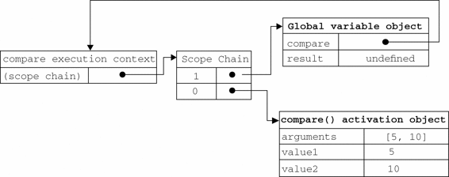
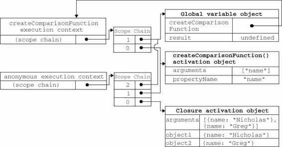

由于闭包会携带包含它的函数的作用域，因此会比其他函数占用更多的内存。过度使用闭包可能会导致内存占用过多，我们建议读者只在绝对必要时再考虑使用闭包。虽然像V8等优化后的JavaScript引擎会尝试回收被闭包占用的内存，但请大家还是要慎重使用闭包。
由于闭包会携带包含它的函数的作用域，因此会比其他函数占用更多的内存。过度使用闭包可能会导致内存占用过多，我们建议读者只在绝对必要时再考虑使用闭包。虽然像V8等优化后的JavaScript引擎会尝试回收被闭包占用的内存，但请大家还是要慎重使用闭包。
有不少开发人员总是搞不清匿名函数和闭包这两个概念，因此经常混用。闭包是指有权访问另一个函数作用域中的变量的函数。创建闭包的常见方式，就是在一个函数内部创建另一个函数，仍以前面的createComparisonFunction()函数为例，注意加粗的代码。
function createComparisonFunction(propertyName) {
return function(object1, object2){
var value1 = object1[propertyName];
var value2 = object2[propertyName];
if (value1 < value2){
return -1;
} else if (value1 > value2){
return 1;
} else {
return 0;
}
};
}
在这个例子中，突出的那两行代码是内部函数（一个匿名函数）中的代码，这两行代码访问了外部函数中的变量propertyName。即使这个内部函数被返回了，而且是在其他地方被调用了，但它仍然可以访问变量propertyName。之所以还能够访问这个变量，是因为内部函数的作用域链中包含createComparisonFunction()的作用域。要彻底搞清楚其中的细节，必须从理解函数第一次被调用的时候都会发生什么入手。
第4章介绍了作用域链的概念。而有关如何创建作用域链以及作用域链有什么作用的细节，对彻底理解闭包至关重要。当某个函数第一次被调用时，会创建一个执行环境（execution context）及相应的作用域链，并把作用域链赋值给一个特殊的内部属性（即[[Scope]]）。然后，使用this、arguments和其他命名参数的值来初始化函数的活动对象（activation object）。但在作用域链中，外部函数的活动对象始终处于第二位，外部函数的外部函数的活动对象处于第三位，……直至作为作用域链终点的全局执行环境。
在函数执行过程中，为读取和写入变量的值，就需要在作用域链中查找变量。来看下面的例子。
function compare(value1, value2){
if (value1 < value2){
return -1;
} else if (value1 > value2){
return 1;
} else {
return 0;
}
}
var result = compare(5, 10);
以上代码先定义了compare()函数，然后又在全局作用域中调用了它。当第一次调用compare()时，会创建一个包含this、arguments、value1和value2的活动对象。全局执行环境的变量对象（包含this、result和compare）在compare()执行环境的作用域链中则处于第二位。图7-1展示了包含上述关系的compare()函数执行时的作用域链。

图 7-1
后台的每个执行环境都有一个表示变量的对象——变量对象。全局环境的变量对象始终存在，而像compare()函数这样的局部环境的变量对象，则只在函数执行的过程中存在。在创建compare()函数时，会创建一个预先包含全局变量对象的作用域链，这个作用域链被保存在内部的[[Scope]]属性中。当调用compare()函数时，会为函数创建一个执行环境，然后通过复制函数的[[Scope]]属性中的对象构建起执行环境的作用域链。此后，又有一个活动对象（在此作为变量对象使用）被创建并被推入执行环境作用域链的前端。对于这个例子中compare()函数的执行环境而言，其作用域链中包含两个变量对象：本地活动对象和全局变量对象。显然，作用域链本质上是一个指向变量对象的指针列表，它只引用但不实际包含变量对象。
无论什么时候在函数中访问一个变量时，就会从作用域链中搜索具有相应名字的变量。一般来讲，当函数执行完毕后，局部活动对象就会被销毁，内存中仅保存全局作用域（全局执行环境的变量对象）。但是，闭包的情况又有所不同。
在另一个函数内部定义的函数会将包含函数（即外部函数）的活动对象添加到它的作用域链中。因此，在createComparisonFunction()函数内部定义的匿名函数的作用域链中，实际上将会包含外部函数createComparisonFunction()的活动对象。图7-2展示了当下列代码执行时，包含函数与内部匿名函数的作用域链。
var compare = createComparisonFunction("name");
var result = compare({ name: "Nicholas" }, { name: "Greg" });
在匿名函数从createComparisonFunction()中被返回后，它的作用域链被初始化为包含createComparisonFunction()函数的活动对象和全局变量对象。这样，匿名函数就可以访问在createComparisonFunction()中定义的所有变量。更为重要的是，createComparisonFunction()函数在执行完毕后，其活动对象也不会被销毁，因为匿名函数的作用域链仍然在引用这个活动对象。换句话说，当createComparisonFunction()函数返回后，其执行环境的作用域链会被销毁，但它的活动对象仍然会留在内存中；直到匿名函数被销毁后，createComparisonFunction()的活动对象才会被销毁，例如：
//创建函数
var compareNames = createComparisonFunction("name");
//调用函数
var result = compareNames({ name: "Nicholas" }, { name: "Greg" });
//解除对匿名函数的引用（以便释放内存）
compareNames = null;
首先，创建的比较函数被保存在变量compareNames中。而通过将compareNames设置为等于null解除该函数的引用，就等于通知垃圾回收例程将其清除。随着匿名函数的作用域链被销毁，其他作用域（除了全局作用域）也都可以安全地销毁了。图7-2展示了调用compareNames()的过程中产生的作用域链之间的关系。

图 7-2
作用域链的这种配置机制引出了一个值得注意的副作用，即闭包只能取得包含函数中任何变量的最后一个值。别忘了闭包所保存的是整个变量对象，而不是某个特殊的变量。下面这个例子可以清晰地说明这个问题。

function createFunctions(){
var result = new Array();
for (var i=0; i < 10; i++){
result[i] = function(){
return i;
};
}
return result;
}
ClosureExample01.htm
这个函数会返回一个函数数组。表面上看，似乎每个函数都应该返自己的索引值，即位置0的函数返回0，位置1的函数返回1，以此类推。但实际上，每个函数都返回10。因为每个函数的作用域链中都保存着createFunctions()函数的活动对象，所以它们引用的都是同一个变量i。当createFunctions()函数返回后，变量i的值是10，此时每个函数都引用着保存变量i的同一个变量对象，所以在每个函数内部i的值都是10。但是，我们可以通过创建另一个匿名函数强制让闭包的行为符合预期，如下所示。
function createFunctions(){
var result = new Array();
for (var i=0; i < 10; i++){
result[i] = function(num){
return function(){
return num;
};
}(i);
}
return result;
}
ClosureExample02.htm
在重写了前面的createFunctions()函数后，每个函数就会返回各自不同的索引值了。在这个版本中，我们没有直接把闭包赋值给数组，而是定义了一个匿名函数，并将立即执行该匿名函数的结果赋给数组。这里的匿名函数有一个参数num，也就是最终的函数要返回的值。在调用每个匿名函数时，我们传入了变量i。由于函数参数是按值传递的，所以就会将变量i的当前值复制给参数num。而在这个匿名函数内部，又创建并返回了一个访问num的闭包。这样一来，result数组中的每个函数都有自己num变量的一个副本，因此就可以返回各自不同的数值了。
this对象在闭包中使用this对象也可能会导致一些问题。我们知道，this对象是在运行时基于函数的执行环境绑定的：在全局函数中，this等于window，而当函数被作为某个对象的方法调用时，this等于那个对象。不过，匿名函数的执行环境具有全局性，因此其this对象通常指向window1。但有时候由于编写闭包的方式不同，这一点可能不会那么明显。下面来看一个例子。
1 当然，在通过
call()或apply()改变函数执行环境的情况下，this就会指向其他对象。
var name = "The Window";
var object = {
name : "My Object",
getNameFunc : function(){
return function(){
return this.name;
};
}
};
alert(object.getNameFunc()()); //"The Window"（在非严格模式下）
ThisObjectExample01.htm
以上代码先创建了一个全局变量name，又创建了一个包含name属性的对象。这个对象还包含一个方法——getNameFunc()，它返回一个匿名函数，而匿名函数又返回this.name。由于getNameFunc()返回一个函数，因此调用object.getNameFunc()()就会立即调用它返回的函数，结果就是返回一个字符串。然而，这个例子返回的字符串是"The Window"，即全局name变量的值。为什么匿名函数没有取得其包含作用域（或外部作用域）的this对象呢？
前面曾经提到过，每个函数在被调用时，其活动对象都会自动取得两个特殊变量：this和arguments。内部函数在搜索这两个变量时，只会搜索到其活动对象为止，因此永远不可能直接访问外部函数中的这两个变量（这一点通过图7-2可以看得更清楚）。不过，把外部作用域中的this对象保存在一个闭包能够访问到的变量里，就可以让闭包访问该对象了，如下所示。
var name = "The Window";
var object = {
name : "My Object",
getNameFunc : function(){
var that = this;
return function(){
return that.name;
};
}
};
alert(object.getNameFunc()()); //"My Object"
ThisObjectExample02.htm
代码中突出的行展示了这个例子与前一个例子之间的不同之处。在定义匿名函数之前，我们把this对象赋值给了一个名叫that的变量。而在定义了闭包之后，闭包也可以访问这个变量，因为它是我们在包含函数中特意声名的一个变量。即使在函数返回之后，that也仍然引用着object，所以调用object.getNameFunc()()就返回了"My Object"。
this和arguments也存在同样的问题。如果想访问作用域中的arguments对象，必须将对该对象的引用保存到另一个闭包能够访问的变量中。
在几种特殊情况下，this的值可能会意外地改变。比如，下面的代码是修改前面例子的结果。
var name = "The Window";
var object = {
name : "My Object",
getName: function(){
return this.name;
}
};
这里的getName()方法只简单地返回this.name的值。以下是几种调用object.getName()的方式以及各自的结果。
object.getName(); //"My Object"
(object.getName)(); //"My Object"
(object.getName = object.getName)(); //"The Window"，在非严格模式下
ThisObjectExample03.htm
第一行代码跟平常一样调用了object.getName()，返回的是"My Object"，因为this.name就是object.name。第二行代码在调用这个方法前先给它加上了括号。虽然加上括号之后，就好像只是在引用一个函数，但this的值得到了维持，因为object.getName和(object.getName)的定义是相同的。第三行代码先执行了一条赋值语句，然后再调用赋值后的结果。因为这个赋值表达式的值是函数本身，所以this的值不能得到维持，结果就返回了"The Window"。
当然，你不大可能会像第二行和第三行代码一样调用这个方法。不过，这个例子有助于说明即使是语法的细微变化，都有可能意外改变this的值。
由于IE9之前的版本对JScript对象和COM对象使用不同的垃圾收集例程（第4章曾经讨论过），因此闭包在IE的这些版本中会导致一些特殊的问题。具体来说，如果闭包的作用域链中保存着一个HTML元素，那么就意味着该元素将无法被销毁。来看下面的例子。
function assignHandler(){
var element = document.getElementById("someElement");
element.onclick = function(){
alert(element.id);
};
}
以上代码创建了一个作为element元素事件处理程序的闭包，而这个闭包则又创建了一个循环引用（事件将在第13章讨论）。由于匿名函数保存了一个对assignHandler()的活动对象的引用，因此就会导致无法减少element的引用数。只要匿名函数存在，element的引用数至少也是1，因此它所占用的内存就永远不会被回收。不过，这个问题可以通过稍微改写一下代码来解决，如下所示。
function assignHandler(){
var element = document.getElementById("someElement");
var id = element.id;
element.onclick = function(){
alert(id);
};
element = null;
}
在上面的代码中，通过把element.id的一个副本保存在一个变量中，并且在闭包中引用该变量消除了循环引用。但仅仅做到这一步，还是不能解决内存泄漏的问题。必须要记住：闭包会引用包含函数的整个活动对象，而其中包含着element。即使闭包不直接引用element，包含函数的活动对象中也仍然会保存一个引用。因此，有必要把element变量设置为null。这样就能够解除对DOM对象的引用，顺利地减少其引用数，确保正常回收其占用的内存。